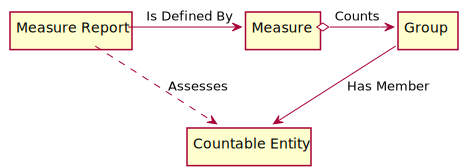
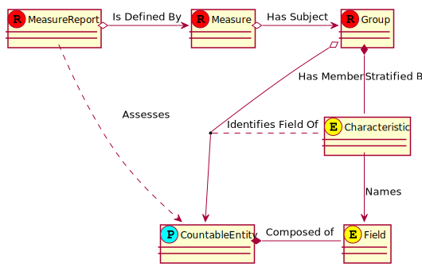

Situational Awareness for Novel Epidemic Response
0.1.0 - CI Build
Situational Awareness for Novel Epidemic Response
0.1.0 - CI Build
Situational Awareness for Novel Epidemic Response - Local Development build (v0.1.0). See the Directory of published versions
According to The American Heritage® Stedman’s Medical Dictionary:
- measure v.
To ascertain the dimensions, quantity, or capacity of.
To mark, lay out, or establish dimensions for by measuring.
At its simplest, measurement is counting in units, and then doing some math with the resulting count or to obtain a value that lets you do something useful.
The focus of this guide is to inform developers on how to create and use the essential FHIR Resources necessary to support national and regional reporting efforts on COVID-19 to public health officials in the United States.
Over the last decade, HL7 and its members have been deeply involved in the evolution of quality measurement, from early efforts in developing the HL7 Version 3 Health Quality Measure Format specification, to more recent efforts in the publication of the HL7 FHIR Quality Measure (QM), and the DaVinci Data Exchange For Quality Measures (DEQM) implementation guides. These guides provide excellent reference and background materials for those interested in learning more about the terminology used in measurement.
This implementation guide uses the MeasureReport resource to report measures to regional and federal agencies, including state departments of public health, the Centers for Disease Control (CDC) and the Federal Emergency Management Agency. In late March of this year, the CDC published a form and instructions for hospital reporting of bed and ventilator utilization, and FEMA provided a spreadsheet it expects to be emailed on a daily basis from in-hospital laboratory testing facilities. Examples of these documents are provided below.
 |
Each of the entries in these spreadsheets or forms is measure or count of groups of things such as available beds, ventilators, tests ordered, et cetera. The completed spreadsheet or form is a Measure Report. Accompanying instructions describe (to a human) what to include in a group. A conceptual model of these artifacts appears below.

The HL7 FHIR standard has similarly named resources that perform the same functions. A more detailed model about how these are related follows. MeasureReport Measure Group

The approach of The SANER IG to measure collection is to capture all measures reported to a single agency in a single Measure, with multiple groups in the measure. This is very much treating MeasureReport as if it were a report card (as one might receive from a school) reporting how a location is doing on all measured criteria, with each group within the MeasureReport reflecting one of the “subject areas” being measured, much like a report card reports on a student’s progress in different subjects.
Unlike a report card, a Measure Report is not necessarily an evaluation of how a location is performing its function. The number of patients in the hospital due to pandemic is not related to how well the hospital performs, and much more due to other factors, such as the density of the local population, or the implementation of appropriate measures to contain the pandemic that are outside the control of the location that is being measured. These MeasureReport resources should be viewed not as a critique of a given facility, rather, an evaluation of the impact the pandemic is having upon a facility.
Combining reporting into a single MeasureReport would result in data loss on the Measure Resource without the ability to express attributes of each Measured item at the group level. That issue is addressed by this Implementation Guide by creating an extension (see Measure Group Attributes below) to allow topic, scoring and type to be shifted from Measure to Measure.group. To simplify interpretation of Measure by consumers, Measures created in this guide always include these extensions on Measure.group, even if they are not strictly needed. A tracker will be created (#TODO: Create Tracker) to suggest moving these classifiers to group.
Public Health Measure profiles the Measure resource to support Public Health and Emergency Response surveillance requirements.
Public Health Measure Report profiles the MeasureReport Resource to align it with resources adopting the Public Health Measure profile.
Measure Criteria profiles the Expression data type to enforce requirements essential for the creation of measures supporting automatic evaluation and reporting.
Measured Item Description provides how to code what is to be counted to identify:
GeoLocation defines an extension that can be used on a Location Resource to include its geolocation data within a Reference to the Location. This localizes (denormalizes) the data in the MeasureReport, enabling more efficient geographic searching capabilities.
Measure Population Alternate Criteria defines an extension that allows alternate criteria for evaluation to be defined for a Measure. In this way, multiple implementations for counting can be supported based on the capabilities of the system available.
Measure Group Attributes defines an extension that enables interpretation the structure of a group as a collection of populations that evaluate to a single measured item.
This implementation guide includes two predefined measures describing the measurements that are required to be reported to CDC/NHSN and FEMA.
CDC/NHSN Patient Impact and Hospital Capacity Reporting Measures defines a measure that is aligned with the reporting required by the National Healthcare Safety Network (CDC/NHSN) using the COVID-19 Patient Impact and Hospital Capacity module, and
FEMA Daily Hospital COVID-19 Reporting Measures defines a measure that is aligned with the reporting required by the Federal Emergency Management Agency (FEMA) for reporting COVID-19 test results from Hospital in-house laboratories.
Additional reporting requirements have already been established by these Federal agencies. This implementation guide will be updated as feasible to include measures for those reports as time allows.
Example data has been created for both of the measures above by using publicly available data from The Covid Tracking Project. Data was downloaded in CSV format using the States Historical Data APIs from that project. The data was augmented with other information regarding number of available acute and ICU beds and ICU utilization statistics to enable creation of a realistic examples. These samples are intended to be realistic, but are NOT real examples.
Some data is simply not publicly available. Thus, these examples also demonstrate how missing or unavailable data can be reported using the above profiles.
| CDC Patient Impact and Hospital Capacity | FEMA Daily Hospital COVID19 Reporting |
|---|---|
| 2020-04-04 | 2020-04-04 |
| 2020-04-05 | 2020-04-05 |
| 2020-04-06 | 2020-04-06 |
| 2020-04-07 | 2020-04-07 |
| 2020-04-08 | 2020-04-08 |
| 2020-04-09 | 2020-04-09 |
| 2020-04-10 | 2020-04-10 |
| 2020-04-11 | 2020-04-11 |
| 2020-04-12 | 2020-04-12 |
| 2020-04-13 | 2020-04-13 |
| 2020-04-14 | 2020-04-14 |
| 2020-04-15 | 2020-04-15 |
| 2020-04-16 | 2020-04-16 |
| 2020-04-17 | 2020-04-17 |
| 2020-04-18 | 2020-04-18 |
| 2020-04-19 | 2020-04-19 |
| 2020-04-20 | 2020-04-20 |
| 2020-04-21 | 2020-04-21 |
| 2020-04-22 | 2020-04-22 |
| 2020-04-23 | 2020-04-23 |
| 2020-04-24 | 2020-04-24 |
| 2020-04-25 | 2020-04-25 |
IG © 2020+ HL7 International. Package hl7.fhir.us.saner#0.1.0 based on FHIR 4.0.1. Generated 2020-04-27
Links: Table of Contents |
QA Report
| Version History  |
|
 |
Propose a change
|
Propose a change